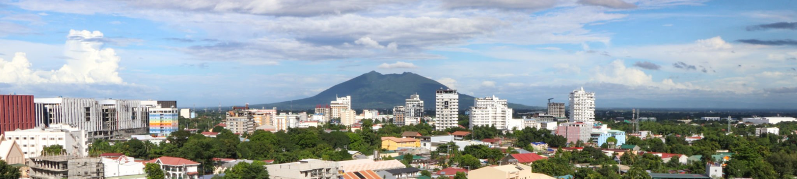

Pampanga is a province in the heart of Central Luzon , the Northern main island of the Philippines archipelago.
The province is best known for culture, delicious food, and family-friendly activities. However, this site aims to educate people about Kapampangan culture, language, and the struggles of being a highly urbanised area.
Check out the pages below!